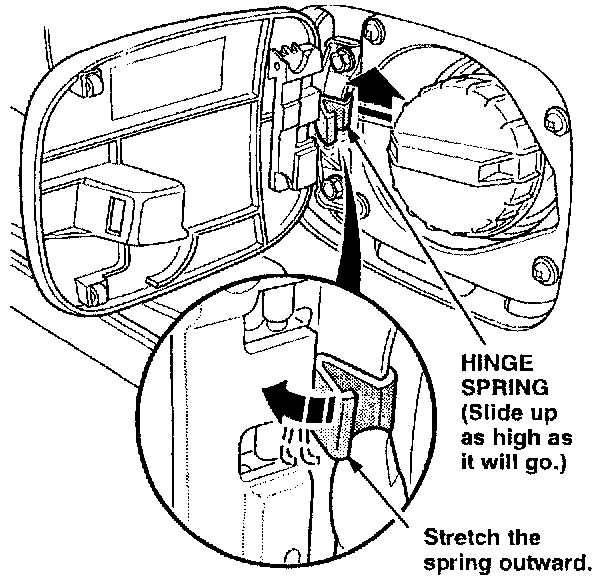
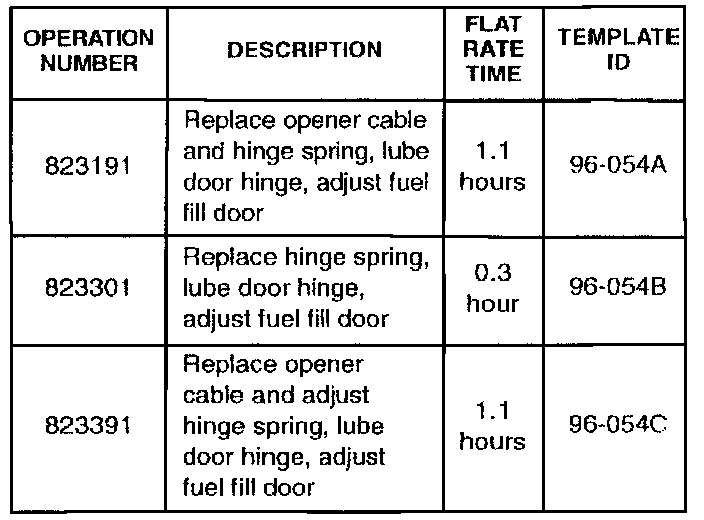

Fuel Fill Door Won't Open
December 3, 1996BULLETIN NO.
96-054
YEAR
1991-96
MODEL
NSX
VIN APPLICATION
ALL
Fuel Fill Door Won't Open
SYMPTOM
The fuel fill door does not open with the release lever.
CORRECTIVE ACTION
1. Pull up and hold the fuel fill door release lever, then gently push on the front of the fuel fill door.
^ If the fuel fill door does not open, go to step 2.
^ If the fuel fill door opens, go to step 3.
2. Replace the opener cable (refer to section 20 of the service manual) with the one listed under PARTS INFORMATION.
3. With the fuel fill door open, check for a missing or out-of-position hinge spring.
^ If the hinge spring is missing, install a new one (see PARTS INFORMATION).

^ If the hinge spring is out of position, reposition it on the hinge, then stretch the spring outward to add more tension.
4. Hold the fuel fill door release lever up, then open and close the door. If the door is stiff and does not swing freely, lubricate the hinge with silicone spray lubricant.
5. With the fuel fill door open, carefully inspect the edge of the door and the door opening for scuff marks on the paint.
6. Close the fuel fill door, and check the clearance between the fuel fill door and the quarter panel. Slide a piece of paper (about the thickness of a dollar bill), all the way around the door.
^ If there are no scuff marks and the paper did not catch, go to step 7.
^ If there are scuff marks or the paper gets caught, loosen the fuel fill door hinge bolts, and adjust the door so it does not contact the quarter panel.
7. Check the fuel fill door for proper operation.
PARTS INFORMATION
Opener Cable: P/N 74411-SL0-A01
Hinge Spring: P/N 74494-SLO-OOO
WARRANTY CLAIM INFORMATION

In warranty:
The normal warranty applies.
Failed P/N: 63910-SL0-010ZZ
Defect code: 030
Contention code: B01
Out of warranty:
Any repair performed after warranty expiration may be eligible for goodwill consideration by the District Technical Manager or your Zone Office. You must request consideration, and get a decision, before starting work.